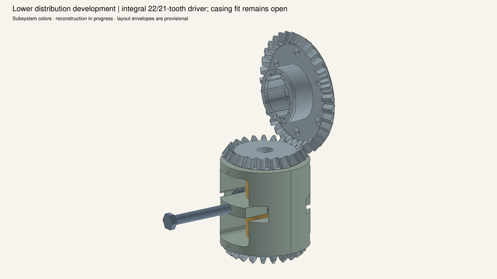
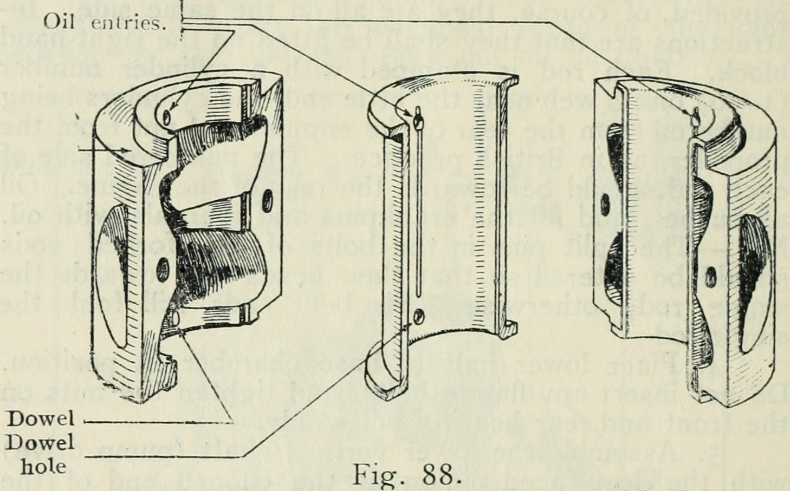
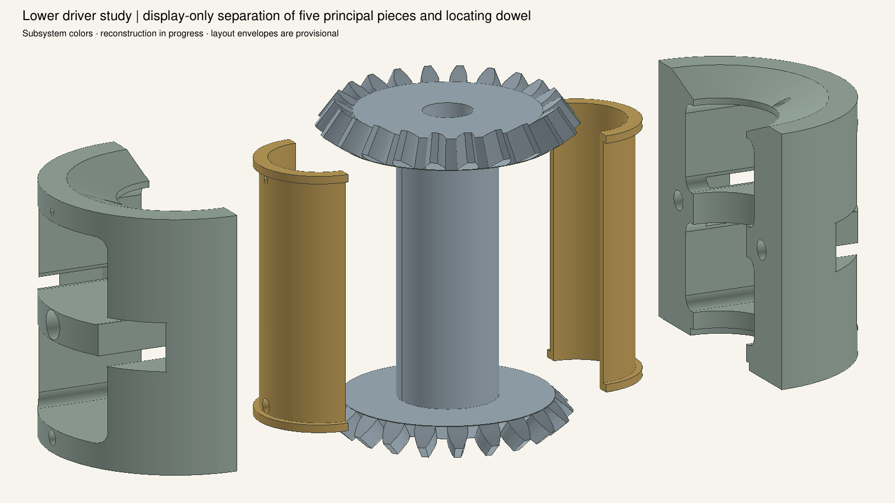
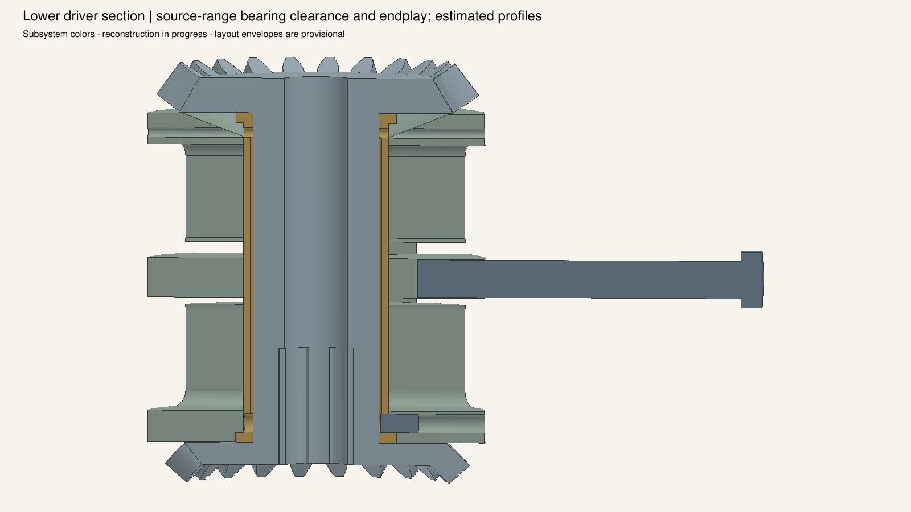
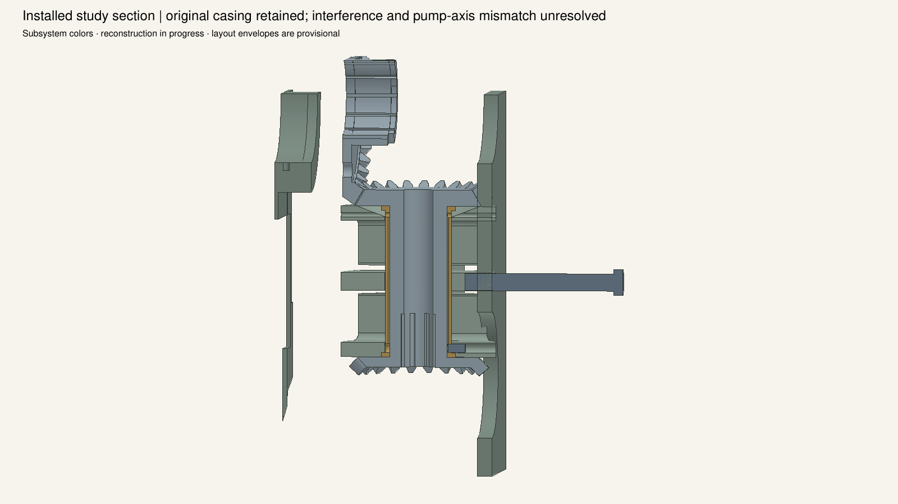
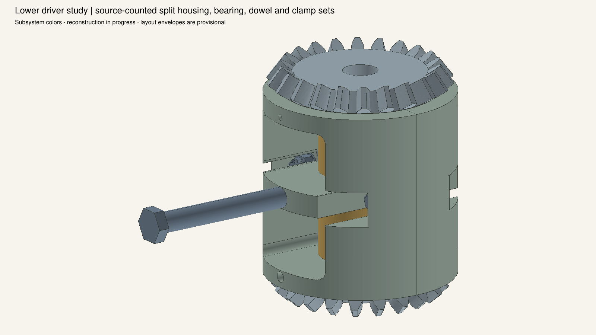
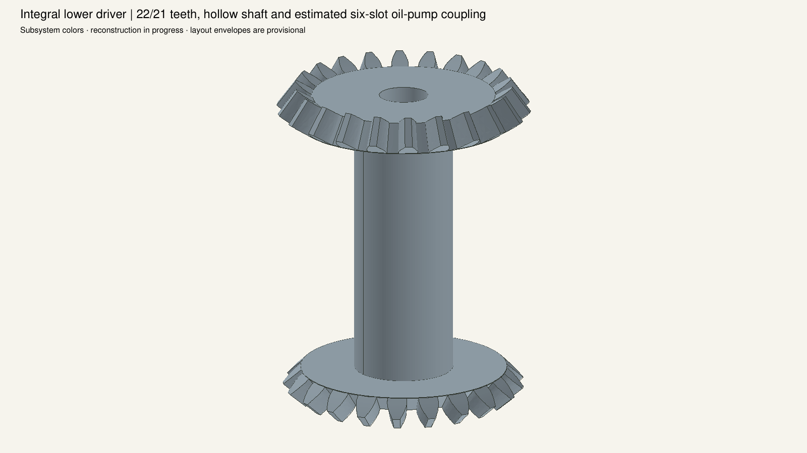

Source counts and printed bearing fits are retained.184mm pump-axis separation, profiles, spline count and screw support are provisional. Original casing is unchanged: visible overlaps and aperture mismatch remain unresolved. Views are not registered to source cameras; cuts and exploded offsets alter display only.










